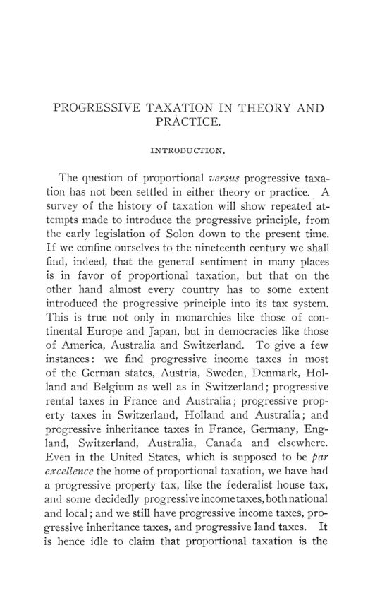

Seligman, 1908: o imposto progressivo entre a teoria e a prática
Leitura: 12 min
Em 1908, Edwin R. A. Seligman revisou seu estudo do imposto progressivo: a progressão seria defensável em teoria, mas, nos Estados Unidos, aplicável de imediato só ao imposto sobre heranças.


Em 1863, na Geórgia, um cervejeiro investiu US$ 50 e lucrou US$ 1.500, ou 3.000% sobre o capital. O imposto estadual sobre a renda crescia com a razão entre lucro e capital, sem teto, e a conta veio em US$ 2.225, mais do que tudo o que ele possuía. Ao reclamar, ouviu do coletor, segundo um jornal da época, que entregasse o que tinha e assinasse uma nota promissória pelo resto. Edwin R. A. Seligman registra o caso numa nota de rodapé, ao descrever o exemplo mais notável de escala progressiva nos estados do Sul durante a Guerra Civil.
Progressive Taxation in Theory and Practice saiu em 1908 como o nº 4 do vol. 9 da terceira série das publicações trimestrais da American Economic Association, com 334 páginas. É a segunda edição, revista; a primeira saiu em 1894 nas Publications e está comentada no nº 40 do Arquivo. O plano tem três partes: a história e a situação atual do imposto progressivo, a teoria, e a aplicação do princípio aos tributos americanos. Logo na introdução, Seligman afirma que quase todos os países já haviam introduzido, em alguma medida, o princípio progressivo, inclusive os Estados Unidos, tidos como a pátria da tributação proporcional.
Afinal, o que é um imposto progressivo?
Seligman começa pela nomenclatura. O imposto é proporcional quando a relação entre o tributo e a base se mantém; é progressivo quando, à medida que a base cresce, o tributo representa uma fração cada vez maior dela. O efeito pode vir de alíquotas crescentes ou da mesma alíquota aplicada a parcelas cada vez menores da base. Quando a alíquota cai com a renda, o imposto é regressivo; quando sobe até um ponto e depois se estabiliza, é degressivo.
Toda progressão para em algum lugar. A alíquota mais alta efetivamente aplicada que o autor encontra na história é de 37,5%, no imposto de renda da Holanda em 1796, uma escala que começava em 3% e, nas palavras dele, quase chegou ao confisco. Durou um ano.
Quem já havia tentado?
A primeira parte percorre a experiência histórica, da Antiguidade à década de 1900. Em Florença, o catasto ganhou escala progressiva em 1443: a chamada graziosa dividia os contribuintes em catorze classes, com alíquotas de 4% a 33⅓% da renda. Na Inglaterra, Pitt introduziu o imposto de renda geral em 1799 com isenção abaixo de £ 60, alíquotas graduadas até £ 200 e 10% acima disso.
Nos Estados Unidos, o primeiro imposto de renda federal efetivamente cobrado, a lei de 1º de julho de 1862, taxava em 3% a renda entre US$ 600 e US$ 10.000 e em 5% o que passasse disso. A lei de 1864 criou três faixas, com alíquotas de 5%, 7,5% e 10%. O secretário do Tesouro, Fessenden, defendeu a escala no relatório daquele ano:
“A capacidade de pagar cresce em proporção muito mais que aritmética.” (“the ability to pay increases in much more than arithmetical proportion”)
Terminada a guerra, a alíquota foi reduzida e unificada, a isenção subiu e o imposto acabou em 1872.
A conclusão da primeira parte é que a tendência à progressão crescia em quase toda parte, com mais força nos países mais democráticos, como a Austrália e a Suíça. O autor ressalva que a aplicação principal estava nos impostos sobre heranças, cobrados uma única vez, e que, nos impostos anuais sobre renda e propriedade, a graduação assumira em geral a forma degressiva.
Por que a progressão não se apoia na teoria socialista?
A segunda parte organiza os argumentos em três grupos: o socialista, o compensatório e o econômico. O primeiro tem como principal expoente Adolf Wagner, para quem as finanças públicas passavam de um período puramente fiscal a um período “sociopolítico”, em que o Estado usaria o imposto para corrigir a distribuição da riqueza. Seligman objeta que considerações sociais sempre influíram na política tributária, de tarifas protecionistas a impostos sobre o luxo, e separa a reforma social do socialismo. Para ele, a justiça exige que o Estado não aumente deliberadamente a desigualdade, mas não que a elimine. As principais reformas sociais, no campo fiscal, estariam do lado do gasto, não da receita.
A teoria compensatória sustenta que parte das diferenças de fortuna resulta de atos ou omissões do próprio Estado, e que o imposto deveria corrigi-las. Seligman a encontra em Francis A. Walker, em Clémence Royer, premiada no congresso tributário de Lausanne em 1860, e em Courcelle-Seneuil. Sua objeção é de medida: não há como calcular quanto da desigualdade o Estado criou. Mais força, diz ele, tem a versão especial do argumento, que aceita um imposto direto progressivo para contrabalançar impostos indiretos regressivos e, assim, restabelecer a proporção no sistema como um todo.
O imposto como prêmio de seguro leva a quê?
A teoria do benefício via o imposto como prêmio pago à seguradora coletiva, o Estado, pela proteção da propriedade. A conclusão natural era a proporção. Seligman mostra como a doutrina se modificou: a isenção do mínimo de subsistência transformava o imposto proporcional sobre a renda líquida em imposto degressivo sobre a renda total. O engenheiro francês Fauveau calculou, com fórmulas matemáticas, que o prêmio de seguro deveria crescer mais rápido que o valor do bem protegido, mas menos rápido que o seu quadrado. Os defensores do benefício, resume o autor, chegaram aos poucos a defender a progressão.
O sacrifício igual resolve a questão?
A teoria da faculdade, ou capacidade contributiva, é mais antiga: as leis coloniais americanas falavam em faculty, e a Declaração dos Direitos do Homem de 1789 mandava repartir a contribuição segundo as faculdades dos cidadãos. Por muito tempo, isso significou imposto proporcional à propriedade e, depois, à renda. A ideia de sacrifício entrou com a isenção do mínimo de subsistência. Tirar 10% de quem ganha mil dólares corta o necessário; tirar 10% de quem ganha cem mil corta, no máximo, o supérfluo. Para igualar os sacrifícios, o rico teria de pagar relativamente mais.
Economistas holandeses deram ao argumento a forma da utilidade marginal, com tabelas em que, para igualar a razão entre sacrifício e satisfação, a alíquota crescia com a renda. Seligman expõe então a resposta de Cohen-Stuart: com outras hipóteses igualmente plausíveis de utilidade decrescente, as mesmas contas levam à proporção ou até à regressão. O autor conclui que, conforme os números escolhidos, se prova qualquer escala.
A objeção de fundo é outra. O sacrifício é psíquico; o imposto retira bens materiais, e não há cálculo que converta um no outro. Duas pessoas com a mesma renda podem senti-la de modo muito diverso. Seligman examina ainda a teoria do sacrifício mínimo de Edgeworth e Carver e conclui que ela não oferece ajuda maior que a do sacrifício igual.
Qual é, então, a posição do autor?
Seligman volta à faculdade e a divide em dois lados. Do lado da produção, a fortuna grande facilita a aquisição de mais fortuna, como notaram Rousseau e Adam Smith: o rico estaria sujeito a uma espécie de lei dos rendimentos crescentes. Do lado do consumo, volta-se ao sacrifício, que não leva a nenhuma escala definida, mas tampouco à proporção. Para o contribuinte médio, conclui, um imposto estritamente proporcional pesa mais sobre o pobre típico do que sobre o rico típico. A progressão não seria nem mais ilógica nem mais injusta que a proporção. O autor admite que a teoria não fixa nenhuma alíquota e responde à objeção da incerteza:
“Meio pão é melhor que pão nenhum.” (“Half a loaf is better than no bread.”)
As objeções clássicas recebem respostas uma a uma. O confisco se evita com uma progressão que desacelera e nunca alcança 100%. A acusação de multar a poupança vale contra qualquer imposto sobre renda ou propriedade. O argumento da arrecadação é fraco, porque a função da progressão é repartir o ônus, não arrecadar mais. Ao temor de que uma classe vote impostos para outra pagar, formulado por Lecky, Seligman responde que ele não se confirmara na prática. Restam ressalvas práticas: a incidência, a dificuldade de tornar progressivo um sistema inteiro e o risco de fraude, que cresce com a alíquota.
E nos Estados Unidos de 1908?
A terceira parte desce aos tributos americanos. O imposto geral sobre a propriedade era, na prática, regressivo: os bens mobiliários intangíveis escapavam na proporção do seu tamanho, e uma alíquota maior para os ricos só aumentaria a evasão. Sobre imóveis, o imposto incidia sobre a terra, não sobre o dono, sem descontar hipotecas.
No imposto de renda, o obstáculo é administrativo. O modelo inglês, cedular e retido na fonte, funcionava, mas não admite escala: no exemplo do autor, uma renda de US$ 50.000 vinda de cinco fontes pagaria US$ 1.000, e a mesma renda vinda de uma só fonte, US$ 3.000. O modelo global, de declaração pessoal, admite a escala, mas fracassara nos países anglo-saxões. Seligman descreve a saída proposta pelo comitê britânico de 1906, um super-tax pessoal sobre rendas acima de £ 5.000, somado ao imposto retido na fonte, e conclui que, nas condições americanas, as vantagens da progressão no imposto de renda seriam ilusórias. No imposto sobre empresas, o argumento do sacrifício não se aplica: a sociedade anônima não tem necessidades, e uma alíquota maior para as grandes pode ser regressiva para o acionista.
A exceção é a herança, que Seligman trata como renda fortuita, um acréscimo casual ao patrimônio. Nela convergem o argumento da faculdade e o compensatório, e quase nenhuma das objeções vale. O livro reproduz longo trecho do relatório de 1907 da Comissão Especial de Tributação de Nova York em defesa da escala progressiva. O desenho futuro que o autor antevê é de receitas federais indiretas, com algum imposto de renda constitucional; impostos estaduais sobre empresas e heranças; e o imóvel deixado aos governos locais. A síntese final é dupla: a progressão é exigida pela justiça ideal, mas
“as dificuldades práticas para sua aplicação geral são quase insuperáveis.” (“the practical difficulties in the way of its general application are well nigh insuperable”)
Na minha leitura
Na minha leitura, o mérito de método do livro está em separar duas perguntas que o debate costuma fundir: se a progressão é justa e se ela é aplicável a um sistema tributário concreto. As razões da resposta negativa à segunda são de administração, não de princípio. O exemplo das cinco fontes de renda e o da fazenda hipotecada mostram que uma alíquota nominalmente progressiva pode produzir o contrário do pretendido quando a base é mal definida. A lição permanece: a progressividade de um sistema se mede pela incidência efetiva sobre a renda do indivíduo, não pela tabela publicada.
A discussão das tabelas de utilidade marginal também ajuda a pensar o presente. Se hipóteses igualmente razoáveis produzem escalas progressivas, proporcionais ou regressivas, a teoria do sacrifício não fornece a alíquota, apenas a pergunta. A escolha da escala depende de parâmetros que ninguém observa diretamente, e por isso a decisão continua a ser, em boa parte, política. O livro transforma essa incerteza num argumento por uma progressão moderada e por melhor administração.
Glossário
- Imposto proporcional
- alíquota constante: o tributo representa sempre a mesma fração da base.
- Imposto progressivo
- o tributo representa fração crescente da base à medida que ela aumenta.
- Imposto regressivo
- a alíquota efetiva cai à medida que a base aumenta.
- Imposto degressivo
- alíquota que sobe até um limite e depois se mantém constante; o ideal continua a ser a proporção.
- Teoria do benefício
- cada um paga segundo as vantagens que recebe do Estado, como num prêmio de seguro.
- Teoria da faculdade (capacidade contributiva)
- cada um paga segundo sua capacidade de pagar, medida por propriedade, renda ou sacrifício.
- Sacrifício igual
- princípio de que o imposto deve impor a cada contribuinte o mesmo ônus relativo.
- Utilidade marginal
- valor da última unidade de um bem ou de renda para quem a possui; tende a cair com a quantidade.
- Imposto cedular (retenção na fonte)
- renda dividida por fontes, cada uma tributada separadamente, em geral no pagador.
- Imposto global
- renda somada e tributada de uma vez, por declaração do próprio contribuinte.
- Incidência
- quem de fato suporta o imposto depois que ele é transferido por preços e contratos.
Fontes
- Progressive Taxation in Theory and Practice (pp. 1–334). JSTOR · Internet Archive (PDF)
- Sumário da edição no JSTOR: American Economic Association Quarterly, 3ª série, vol. 9, nº 4.
Documento em domínio público (EUA, publicado antes de 1931), via JSTOR Early Journal Content e Internet Archive. Resumo e comentário do autor deste site, sem afiliação com a American Economic Association. Encontrou um erro? Escreva: a correção é publicada no próprio texto, com data.
← Nº 93 · O terceiro Bulletin: petróleo, população e a bibliografia herdada Nº 95 · O quarto Bulletin: Patten e a forma da literatura econômica →